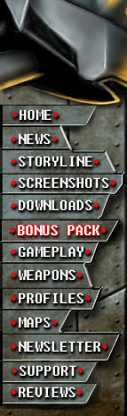
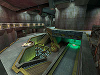

|
| 
|
|
GORE MAPS
|
5000 years
ago, when the Knossis temple was constructed by slave
labor using local stone, an ancient race of violent warriors
controlled the region with bloodied swords. Now the walls
are stained with blood once more. The Bloody Temple of
Knossis is a violent and confronting arena; fight when
required and move fast. |
|  |
An extensive industrial playing field with wide doorways
and loads of space, this map is a true tribute to FPS
gaming in its glory days. The incredibly moody radiation
will have you gazing at the other characters in admiration
before unmercifully butchering them. Every area has three
or more entrances to keep the action fast paced. |
|
One of the most vertical, unlimited maps in Gore. In this
city map, players are allowed to enter almost every building
as well as access the roofs. With jump pads, climbable
fire escapes, gutters, and barred-up windows, the restriction
of horizontal movement does not exist. |
|
A training
facility with above and below ground facilities designed
for Capture the Flag and based on Bootcamp’s military
style. There's lots of cover and you'll need it for the
enduring long hallways, multiple paths, and sniping towers. |
|
A cemetery straight
out of a horror film, this super-gloomy open graveyard
leads to playing tag with other players in the dark. Players
have to be careful to avoid the cliff face, and watch
their backs in the catacombs that are interconnected to
an underground cave system. Keep and eye out for the teleporter
in the open grave and lava cracks in the catacomb floors. |
 |
A
composite of storage areas by the docks also includes
tight office space environments.Hub style game-play for
deathmatch with quick corners and attacks from all angles,
and solid teamplay with lots of places to hide in tactical
mode. Complete with distinctive areas that all play differently,
and an open yard in the middle for arena fighting. |
|
A symposium
of world leaders and abode of the Meat Machine, now overrun
with the psychotic. Beautifully detailed areas with vast
hallways, overpass walkways and multi-height arenas. This
level will have players asking, “Am I in a shopping
mall?” |
|
In an abandoned house on the edge of town, MOB forces
have moved in and decided to make it their own, but the
UMC doesn’t see it that way. With creaky floor boards,
broken chimneys and bathrooms of blood there are plenty
of locations where MOB and UMC forces can engage each
other. From roof top to basement, the battles in this
house will cause it to be turned into a house of horror. |
|
|
 |
| |
|
 |
|
)
){kind=link}
){kind=link}
){kind=link}
){kind=link}
){kind=link}
){kind=link}
){kind=link}